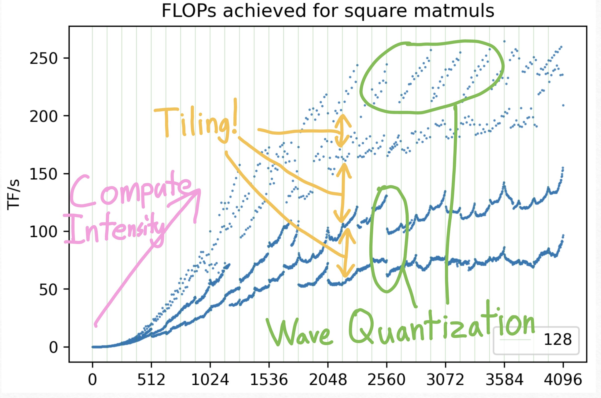

機械学習やハイパフォーマンスコンピューティング（HPC）のコミュニティにおいて、「行列の形状（Shape）が行列乗算（Matmul）のパフォーマンスに極めて大きな影響を与える」という事実は、一種の暗黙知として広く共有されている。しかし、時折、非常に直感に反する現象に遭遇することがある。例えば、「行列のサイズを大きくしたにもかかわらず、計算の絶対的な実行時間が短くなる」という現象である。計算量（Work）が増加しているのにもかかわらず、より速く処理が完了するのだ。
この不可解な現象は、GPUがこれらの基本的な演算をどのように実行しているのか、そのアーキテクチャの深淵を覗き込むことで説明が可能である。
本稿では、Horace He氏によるオリジナルの解説記事の洞察を交えながら、行列乗算の形状がなぜこれほどまでに重要なのかを解き明かす。具体的には、パフォーマンスを支配する3つの重要な概念、すなわち計算強度と並列化（Compute Intensity and Parallelization）、タイリング（Tiling）、そしてウェーブ量子化（Wave Quantization）について詳細に解説する。

1. 計算強度と並列性の必要性
グラフの全体的な傾向として、行列のサイズ \(N\) が大きくなるにつれて、Matmulのパフォーマンス（FLOPs）は向上していく。これには主に2つの要因が存在する。
第一に、オーバーヘッドの相対的な減少と並列性の確保である。GPU上で計算カーネルを起動（Launch）する際、Streaming Multiprocessors (SMs) のセットアップや同期処理など、一定の固定オーバーヘッドが発生する。計算すべきタスクの量が増えれば、この固定オーバーヘッドが全体の実行時間に占める割合は小さくなる。さらに重要なのは、GPUが膨大な数の並列コアを搭載しているという事実である。これらのコアを休ませることなく最大スループットを達成するには、GPUを飽和させるのに十分な「並列化可能なタスク」が必要となる。行列サイズが小さい場合、GPUのリソースを完全に使い切るだけのタスクを供給できないのである。
第二に、算術強度（Arithmetic Intensity）の向上である。行列乗算には、メモリへのアクセスと実際の計算（FLOPs）の両方が含まれる。ハードウェアの特性上、メモリアクセスは計算に比べて桁違いに高コストである。サイズ \(N\) の正方行列の乗算を考えた場合、計算量は \(2N^3\) FLOPs であるのに対し、メモリアクセス量は \(3N^2\) となる。つまり、\(N\) が大きくなるにつれて、メモリアクセスに対する計算の比率（\(\mathcal{O}(N)\)）が上昇する。これにより、データの到着を待つ時間が相対的に減少し、純粋な計算に費やされる時間の割合が増加する。これが算術強度の向上である。
十分な計算強度と並列性が確保されていない小さな行列では、メモリアクセス律速やGPUリソースの過少利用がボトルネックとなり、低いパフォーマンスしか得られない。
2. タイリング：メモリレイアウトがもたらす影響
計算強度の概念は、パフォーマンスが右肩上がりになる全体的なトレンドを説明する。しかし、プロットに見られる「激しい上下の振動（Squiggly lines）」や、行列サイズによる劇的なパフォーマンスの差異を説明するには不十分である。この複雑な挙動の主たる原因はタイリング（Tiling）にある。
タイリングとは、巨大な行列をGPUの高速なオンチップキャッシュ（共有メモリなど）に収まるサイズの小さなブロック（Tile）に分割して処理する最適化手法である。このタイリングプロセスの効率は、行列のデータがメモリ上でどのように配置されているか（メモリレイアウト）に決定的に依存する。
アライメントの取れたメモリレイアウト（Aligned Memory Layout）： 行列の次元がキャッシュラインサイズ（例えばGPUでは32要素など）の完全な倍数である場合、タイルの各行はキャッシュラインと綺麗に整列（アライン）する。この状態では、GPUは必要な要素を含むキャッシュラインだけを正確かつ無駄なくロードできるため、極めて効率的なメモリアクセスが実現する。
アライメントの崩れたメモリレイアウト（Unaligned Memory Layout）： 行列の次元がキャッシュラインサイズの倍数でない場合、論理的な行の境界と物理的なキャッシュラインの境界にズレが生じる。これにより、タイル内のある行を読み込む際に、本来不要な隣接するキャッシュラインのデータまで強制的にロードしなければならなくなる。この冗長なメモリアクセスは、メモリ帯域を浪費し、計算を著しく遅延させる。
この現象は、時に「タイル量子化（Tile Quantization）」と混同されるが、タイル量子化が主にタイルの境界サイズにおけるタスク数の非連続な増加による効率低下を指すのに対し、メモリレイアウトの問題は、カーネルの実行開始時点で既に勝敗が決しているという点でより深刻である。次元数がほんの少し（例えば数要素）変わるだけで、アライメントの取れた完璧なメモリアクセスパターンが破壊され、大幅なパフォーマンスの低下（時には半分以下になることすらある）を引き起こすのである。
3. ウェーブ量子化：見えざる「追加ウェーブ」のコスト
さらに不可解なのは、行列の次元が32などの重要なファクターで割り切れる（つまりアライメントが取れている）にもかかわらず、特定の周期で「縞模様（Striped）」のようにパフォーマンスが急落するパターンが存在することだ。この現象はウェーブ量子化（Wave Quantization）に起因する。
この概念を理解するために、単純な思考実験を行ってみよう。 あなたが並列に実行可能な \(N\) 個のタスクと、\(N\) 個の処理ユニット（プロセッサ）を持っているとする。すべてのタスクはちょうど1秒で完了する。 * \(N\) 個のタスクを処理するのに何秒かかるか？ → 答えは1秒である。すべてのプロセッサが一斉に稼働し、1つの「ウェーブ（Wave）」で完了する。 * では、タスクが \(N+1\) 個になったらどうなるか？ → 答えは2秒である。\(N\) 個のプロセッサのうち1つが、2つ目のタスクを引き受けなければならず、全体のレイテンシは実質的に2倍になる。
行列乗算のコンテキストにおいて、この「タスク」は計算用の「スレッドブロック（Thread Block）」または「タイル」に相当し、「処理ユニット」はGPUの Streaming Multiprocessors (SMs) である。
行列サイズが大きくなると、必要なスレッドブロックの総数も増加する。この総数が、GPUに搭載されている利用可能な SM の数の倍数を超えた瞬間、タスクを処理しきれずに追加の「ウェーブ」が必要となる。このウェーブの切り替わりポイントにおいて、処理能力にアイドルな（何もしていない）SMが大量に発生し、パフォーマンス（TFLOPS）が急激に低下する。
例えば、NVIDIA A100 GPU は 108 基の SM を搭載している。ある CUTLASS ベースの Matmul カーネルが \(256 \times 128\) のタイルサイズを使用しているとする。行列サイズ \(N=1792\) の場合、グリッドサイズは \((1792/256) \times (1792/128) = 7 \times 14 = 98\) タイルとなる。98は108未満なので、ちょうど1ウェーブで収まる。 しかし、\(N=1793\) になった瞬間、グリッドサイズは切り上げられて \(8 \times 15 = 120\) タイルとなる。108を超えるため、2ウェーブの実行が必要となり、パフォーマンスは劇的に悪化する。
ウェーブ量子化は、具体的なカーネルのパラメータ（タイルサイズなど）やハードウェアの SM 数に強く依存するため、予測や回避が困難な罠となる。プロファイリングツールを活用することで、cuBLASがアルゴリズムを切り替えたタイミングや、この隠れたパフォーマンス低下の要因を特定することが可能である。
近年では、このウェーブ量子化の制約を根本から打ち破るアプローチとして、Stream-K のような革新的なアルゴリズムに関する研究も進んでいる。Stream-K は、従来のタイルベースの物理的な分割ではなく、内側のループイテレーションをプロセッシングエレメント間でワークセントリック（Work-centric）に分割することで、いかなる行列形状に対しても計算リソースをほぼ完璧に利用（Near-perfect utilization）することを目指しており、ウェーブ量子化の回避に光明を投じている。
4. torch.compile は万能薬か？
PyTorchの torch.compile のような最新のコンパイラツールは、Pythonコードを自動的に最適化する際、行列をよりパフォーマンスの高い形状（例えば32の倍数など）にパディング（Padding）する処理を試みる。これにより、開発者が形状を意識しなくてもある程度の最適化が施される。
しかし、これらの自動ツールがすべての問題を解決できるわけではなく、いくつかの制限が存在する。
- コピーのオーバーヘッド（Copying Overhead）： パディングを行うには、通常、メモリ上で新しい行列のコピーを作成する必要がある。演算の途中のテンソルであればオペレーションのフュージョン（Fusion）で隠蔽できることもあるが、入力データ（例えば Network の重み行列など）をパディングする場合、このメモリコピーによるオーバーヘッドが避けられず、かえって遅くなるケースがある。
- ウェーブ量子化の複雑性： キャッシュアライメントのためのパディングは比較的単純だが、特定のハードウェアの SM 数や動的なバッチサイズに依存するウェーブ量子化の問題をコンパイラが自動で完全に解決するのは極めて困難である。依然として、手動での介入や慎重な形状設計が求められる領域が残されている。
結論
Large Language Model (LLM) をはじめとする現在のディープラーニングモデル内で実行されている行列乗算の形状（Shape）は、決して恣意的に決めてよいものではない。それは、並列性の活用、メモリへのアクセスパターン、そしてスレッドブロックのスケジューリング（ウェーブ）を通じて、最終的な実行パフォーマンスに極めて深い影響を及ぼしている。
タイリングによるメモリアライメントや、ウェーブ量子化といった背後にある概念を深く理解することで、我々は以下の恩恵を得ることができる。
- パフォーマンス問題の診断： 特定のバッチサイズや埋め込み次元において、なぜ突然モデルの学習や推論が遅くなるのかを論理的に特定できる。
- コードの最適化： 対象となる GPU アーキテクチャに適合するように、手動で行列をパディングしたり、ネットワークのハイパーパラメータ（次元数など）を賢く選択できる。
- 限界性能の引き出し： ほんのわずかな形状の調整（数要素の追加や削減）によって、全体のパフォーマンスをさらに10〜15%向上させることが可能となる。
コンパイラや自動最適化ツールの進化は目覚ましいが、ハードウェアとアルゴリズムの境界で起きているこれらの根本的な原理を理解することは、機械学習エンジニアや HPC リサーチャーにとって、極限のパフォーマンス（Peak Performance）を達成するための強力な武器であり続けるだろう。